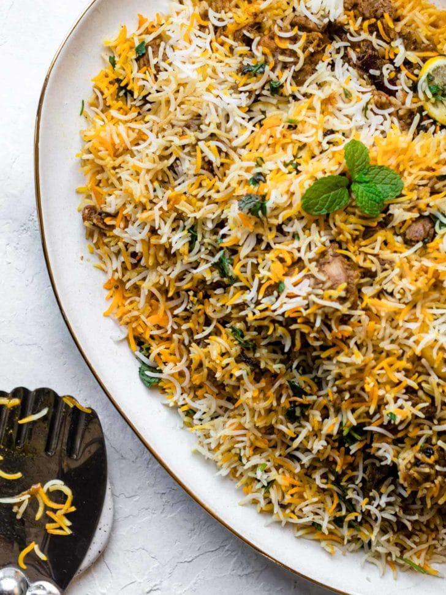

Biryani

Biryani is a mixed rice dish originating among the Muslims of the Indian subcontinent. It is made by adding rice and spices to meat. Eggs and/or vegetables, such as potatoes, are also added in certain regional varieties.
INGREDIENTS
- Oil/Ghee
- Onions
- Bone-in, cut up, skinless chicken
- Whole spices
- Garlic + Ginger
- Tomatoes
- Yogurt
- Rice
- Dried Plums (Alu Bukhara)
STEPS
- Prepare the biryani masala (or use store-bought) and marinate the chicken.Cook the chicken curry. While it's cooking over low heat, prepare the rice.
- Bring a pot of water to a boil and parboil the rice. Drain and set aside.
- Layer half of the rice, all of the chicken, and then the remaining rice on top. Add the finishing touches.Allow steam to develop, then lower the heat and let the flavors meld.